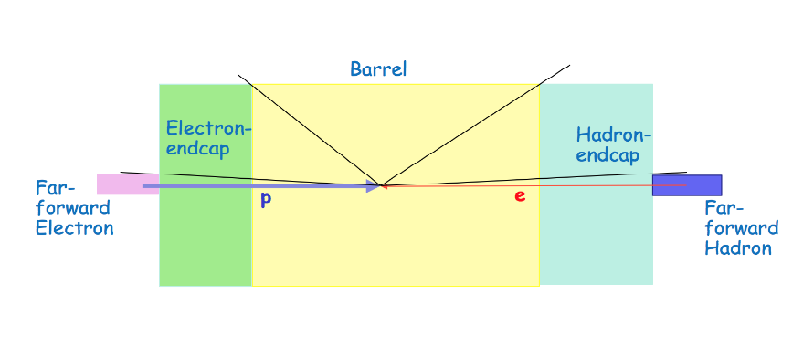

Detector naming convention¶
Central Detector (c):
Barrel (cb) == Central Barrel
- Solenoid (cb_Solenoid)
- Vertex detector (cb_VTX)
- Central tracker (cb_CTD)
- DIRC (cb_DIRC)
- Electromagnet Calorimeter (cb_EMCAL)
- Hadronic Calorimeter (cb_HCAL)
Electron endcap (ce) == Central Electron endcap
- GEM tracking (ce_GEM)
- Modular RICH (ci_MRICH)
- Electromagnetic Calorimeter (ce_EMCAL)
Ion endcap (ci) == Central detector Ion endcap
- GEM tracking (ci_GEM)
- Dual*Radiator RICH (ci_DRICH)
- Transition Radiation Tracker (ci_TRD)
- Electromagnetic Calorimeter (ci_EMCAL)
- Hadronic Calorimeter (ci_HCAL)
Forward ion (fi) direction area near D1 magnet:
- Tracker detector1 (fi_TRKD1)
- Tracker detector2 (fi_TRKD2)
- Electromagnetic Calorimeter (fi_EMCAL)
FarForward ion (ffi) direction area (near D2, D3 magnets)
- ZeroDegree Calorimeter (ffi_ZDC)
- Roman Pots (ffi_RPOTS)
Far forward electron (ffe) direction area
- Low*Q2 tagger (ffe_LQ2)
- Electron Polarimeter (ffe_CPOL)
- Luminosity monitor (ffe_LUMI)